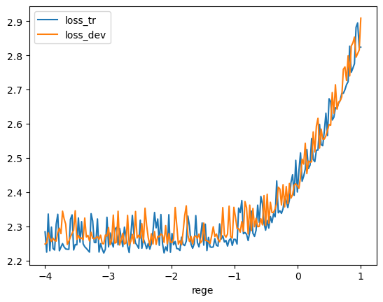

import torchL01_E03
Use the dev set to tune the strength of smoothing (or regularization) for the trigram model - i.e. try many possibilities and see which one works best based on the dev set loss. What patterns can you see in the train and dev set loss as you tune this strength? Take the best setting of the smoothing and evaluate on the test set once and at the end. How good of a loss do you achieve?
import random
random.seed(42)
words = open('../names.txt','r').read().splitlines()
random.shuffle(words)
n1 = int(0.8*len(words))
n2 = int(0.9*len(words))
words_tr = words[:n1]
words_dev = words[n1:n2]
words_te = words[n2:]chars = sorted(list(set(''.join(words_tr))))
len(chars)26ctoi = {c : i+1 for i,c in enumerate(chars)}
ctoi['.'] = 0itoc = {i:c for c,i in ctoi.items()}num_chars = len(ctoi.keys())
num_chars27stoi = {}
for i0,c0 in sorted(itoc.items(), key=lambda kv: kv[0]):
for i1,c1 in sorted(itoc.items(), key=lambda kv: kv[0]):
#print((i0*num_chars) + i1,c0,c1)
stoi[(c0,c1)] = (i0*num_chars) + i1def build_dataset(words):
xs,ys = [],[]
for word in words:
chs = '..' + word + '.'
for ch1,ch2,ch3 in zip(chs,chs[1:],chs[2:]):
ix1 = stoi[ch1,ch2]
ix2 = ctoi[ch3]
xs.append(ix1)
ys.append(ix2)
# prefer to use torch.tensor instead of torch.Tensor
xs = torch.tensor(xs)
ys = torch.tensor(ys)
num = xs.nelement()
print(f'number of examples: {num}')
return xs, ysXtr,Ytr=build_dataset(words_tr)
Xdev,Ydev=build_dataset(words_dev)
Xte,Yte=build_dataset(words_te)number of examples: 182625
number of examples: 22655
number of examples: 22866import torch.nn.functional as Frege = torch.linspace(-4,1,200)
regs = 10**rege
loss_tr = []
loss_dev = []
loss_reg = [] #keep track of the loss we are adding from the regularization
for reg in regs:
g = torch.Generator().manual_seed(2147483647)
W = torch.randn((num_chars*num_chars,num_chars), generator=g, requires_grad=True) #single layer of 27 neurons each getting 27x27 inputs
for k in range(400):
xs, ys = Xtr, Ytr
xenc = F.one_hot(xs, num_classes = num_chars*num_chars).float()
logits = xenc@W #log-counts
counts = logits.exp() # exponentiate the logits to get fake counts
probs = counts/counts.sum(1,keepdims=True)
loss_1 = (-(probs[torch.arange(xs.nelement()),ys]).log()).mean()
loss_2 = reg*(W**2).mean() #regularization loss
loss = loss_1 + loss_2
# if k%40==0: print(loss.item())
#backward pass
W.grad = None #More efficient than setting to zero directly. Lack of gradient is interpreted as zero by PyTorch
loss.backward()
#update
W.data += -4*50 * W.grad
loss_tr.append(loss_1.item())
loss_reg.append(loss_2.item())
xs, ys = Xdev, Ydev
xenc = F.one_hot(xs, num_classes = num_chars*num_chars).float()
logits = xenc@W #log-counts
counts = logits.exp() # exponentiate the logits to get fake counts
probs = counts/counts.sum(1,keepdims=True)
loss = (-(probs[torch.arange(xs.nelement()),ys]).log()).mean()
loss_dev.append(loss.item())
#print(reg.item(), loss_tr[-1], loss_dev[-1])
print('Done!')Done!import pandas as pd
import numpy as npdf = pd.DataFrame({'rege': rege, 'reg': regs, 'loss_tr':loss_tr, 'loss_dev': loss_dev })
df.head()| rege | reg | loss_tr | loss_dev | |
|---|---|---|---|---|
| 0 | -4.000000 | 0.000100 | 2.283918 | 2.248096 |
| 1 | -3.974874 | 0.000106 | 2.224400 | 2.251100 |
| 2 | -3.949749 | 0.000112 | 2.335932 | 2.280850 |
| 3 | -3.924623 | 0.000119 | 2.228556 | 2.264807 |
| 4 | -3.899498 | 0.000126 | 2.297669 | 2.255722 |
(df.set_index('rege')
[['loss_tr','loss_dev']]
.plot()
)
Let’s identify the regularization that leads to the lowest loss on the dev set.
df.loss_dev.idxmin(), df.loss_dev.min()(66, 2.24414324760437)df.iloc[df.loss_dev.idxmin(), :]rege -2.341709
reg 0.004553
loss_tr 2.233218
loss_dev 2.244143
Name: 66, dtype: float64Retrain with this best value of regularization
10**(rege[df.loss_dev.idxmin()].item())0.004552933843974289g = torch.Generator().manual_seed(2147483647)
W = torch.randn((num_chars*num_chars,num_chars), generator=g, requires_grad=True) #single layer of 27 neurons each getting 27x27 inputs
reg = 10**(rege[df.loss_dev.idxmin()].item())
for k in range(400):
xs, ys = Xtr, Ytr
xenc = F.one_hot(xs, num_classes = num_chars*num_chars).float()
logits = xenc@W #log-counts
counts = logits.exp() # exponentiate the logits to get fake counts
probs = counts/counts.sum(1,keepdims=True)
loss_1 = (-(probs[torch.arange(xs.nelement()),ys]).log()).mean()
loss_2 = reg*(W**2).mean() #regularization loss
loss = loss_1 + loss_2
# if k%40==0: print(loss.item())
#backward pass
W.grad = None #More efficient than setting to zero directly. Lack of gradient is interpreted as zero by PyTorch
loss.backward()
#update
W.data += -4*50 * W.grad
print(loss_1.item(), loss_2.item(), loss.item())2.2332184314727783 0.006634071934968233 2.2398524284362793Finally let’s evaluate the loss on the test set
xs, ys = Xte, Yte
xenc = F.one_hot(xs, num_classes = num_chars*num_chars).float()
logits = xenc@W #log-counts
counts = logits.exp() # exponentiate the logits to get fake counts
probs = counts/counts.sum(1,keepdims=True)
loss = (-(probs[torch.arange(xs.nelement()),ys]).log()).mean()
print(loss.item())2.2439746856689453